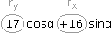
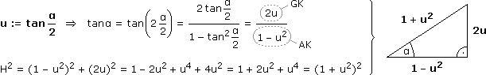
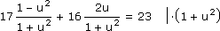
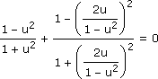

Anhang zu: GONIOMETRIE/TRIGONOMETRIE
HERLEITUNG DER SUMMENSÄTZE ÜBER KOMPLEXE ZAHLEN
| ejαejβ |

|
ej(α+β) = cos(α + β) + jsin(α + β) (cosα + jsinα)(cosβ + jsinβ) = (cosαcosβ – sinαsinβ) + j(sinαcosβ + cosαsinβ) |
ERGÄNZUNG ZU AUFGABE 4:
Eine weitere Lösungsvariante besteht darin, die Kosinus-Sinus-Form in Amplituden-Phasen-Form umzuschreiben:
Aufgabe: Bestimme die Lösungsmenge in [0°, 360°[: 17cosα + 16sinα = 23
a)  = (*)
r = √rx2 + ry2 = √162 + 172 = 23,345
φ = arctan (± 180°, falls rx<0) = arctan = 46,74°
ry
rx
17
16
(*) = 23,345sin(α + 46,74°)
Wir setzen u = α + 46,74° mit α
 [0°, 360°[
[0°, 360°[  u [46,74°; 406,74°[
u [46,74°; 406,74°[23,345sinu = 23 :23,345 arcsin(.)
u1 = 80,13° α1 = u – 46,74° = 33,40°
α1 = u – 46,74° = 33,40°
u2 = 180° – u1 = 99,87° α2 = … = 53,13°
α2 = … = 53,13°TANGENS-HALBWINKEL-SUBSTITUTION
Die folgende Substitution ersetzt cosα, sinα, tanα in einem Aufwaschen durch u-Terme und liefert alle Lösungen α
]–180°, 180°[:
Aufgabe: Bestimme die Lösungsmenge in [0°, 360°[: 17cosα + 16sinα = 23

17 – 17u2 + 32u = 23 + 23u2
0 = 40u2 – 32u + 6
0 = 40u2 – 32u + 6
u1,2 = 0,30,5
32 ± √(–32)2 – 4·40·6
2·40
0,30,5
Fall u1: tan = 0,3 α1 = 33,40°Fall u2: tan = 0,5 α2 = 53,13°
α
2
α1 = 33,40°Fall u2: tanα
2
α2 = 53,13°
Fall 180°: Keine weitere Lösung
Aufgabe: Bestimme die Lösungsmenge in [0°, 360°[: cosα + = 0
1 – tan2α
1 + tan2α

1 – u2
1 + u2
1 – 2u2 + u4 – 4u2
1 – 2u2 + u4 + 4u2
1 – u2
1 + u2
1 – 6u2 + u4
(1 + u2)2
1 – u4 + 1 – 6u2 + u4 = 0
+ 1 – 6u2 + u4 = 0
+ 1 – 6u2 + u4 = 0u1,2 = ±√1/3
Fall u1: tan = √1/3 α1 = 60°Fall u2: tan = –√1/3 α2 = 300°
α
2
α1 = 60°Fall u2: tanα
2
α2 = 300°
Fall 180°: α3 = 180° ist weitere Lösung